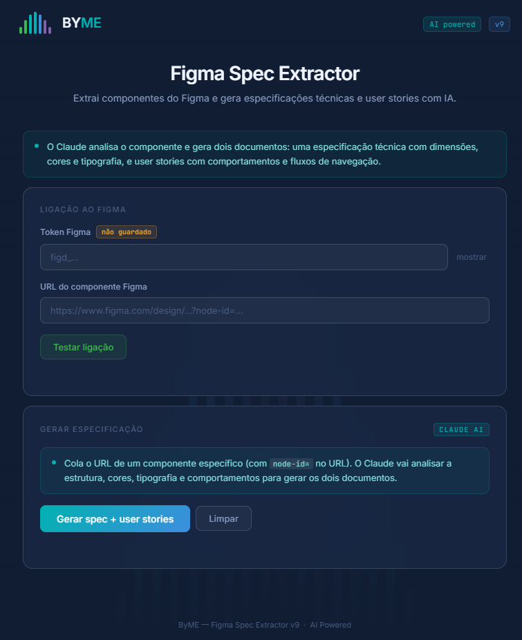

ByME AI Workflow
Automating Design Specifications with Artificial Intelligence for ByME Healthcare.
Company
ByME Healthcare
My Role
UI/UX & AI Intern
Design Ops AI IntegrationTools
Claude, Figma REST API, HTML/CSS
Timeline
8 Weeks
The Challenge
During my internship at ByME Healthcare, I was tasked with solving a real and recurring problem in product teams: the manual, time-consuming, and often inconsistent process of writing technical specifications for design components.
The goal was to deeply understand the ByME Design System (MDS) in Figma and develop an efficient, scalable, and consistent automated workflow using Artificial Intelligence (Claude) to bridge the gap between design and development.
Exploration & Prototyping
I started by exploring the capabilities of the Figma REST API. I developed a custom HTML tool that allowed designers to extract structural data from Figma components simply by pasting a URL. The tool would then generate a highly optimized prompt to be fed into an AI.
Figma REST API Limitations
While testing, I encountered severe rate-limiting issues with standard Figma accounts, which forced me to pivot and rethink the architecture of the automation tool.
Iterative Interface Design
I iterated on the internal tool from V.5 to V.9, refining the UI aesthetics to match ByME's branding and adding features like an extraction history for better usability.

The Final AI-Powered Solution
After realizing that standard API extraction only captured raw dimensions and colors without semantic logic, I shifted to a fully integrated AI workflow. Utilizing Claude's Model Context Protocol (MCP), I created an intelligent documentation assistant.
The final workflow (V.12) reads the technical context directly from Figma Desktop, analyzes visual screenshots, and outputs comprehensive Markdown documents containing:
- Technical Specs: Design tokens, layout dimensions, typography, interaction states, and accessibility requirements.
- User Stories: Standardized agile formats mapping out user roles, goals, and acceptance criteria.
Results & Impact
This project proved that integrating AI into Design Ops is highly beneficial. By defining clear nomenclature rules in Figma and leveraging direct contextual reading through MCP, I successfully transformed a tedious manual task into an automated, interactive process that outputs high-fidelity developer-ready documentation.